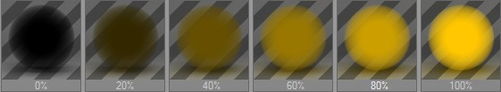
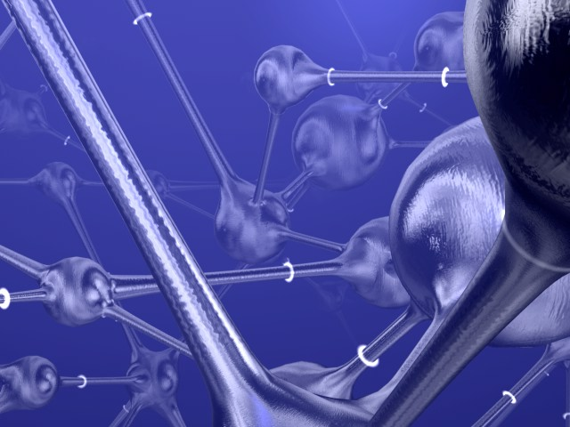

Function available in CINEMA 4D Prime, Visualize, Broadcast, Studio & BodyPaint 3D
烟雾

这些参数可以模拟烟雾或气体云。带有这种属性的物体是半透明的，但是穿过它们的光线会被减弱，这取决于其密度。
烟雾材质只能应用在闭合的对象上。烟雾是一种应用到物体内部的体积效果，对于非闭合对象，CINEMA 4D 无法判断物体的内部和外部，因此如果将烟雾材质应用到这种对象上时，可能会得到意想不到的结果。
© BGS-Group.
烟雾使用透明页面设置的折射率，并禁用透明度。烟雾和透明是无法同时渲染的，在一种材质上你只能渲染它们两者中的一个。
在大部分材质通道页面，可以使用取色器来选取颜色。
亮度值决定了烟雾的亮度：从 0% 到100%。
光线穿过烟雾时会被减弱。你可以通过距离来控制减弱程度。数值越大，烟雾就越薄。距离决定了光线可以在烟雾里走多远。
你可以给烟雾着色，这也会影响到它的可见性。烟雾中越远的地方可以看到的东西就越少，烟雾的颜色也越浓重。因此烟雾的颜色也取决于距离值。
假设将距离设为500单位，一束初始强度 100% 的光线在穿过 250 单位的烟雾之后强度会变成 50%，再继续走 250 单位之后会彻底消失。距离设置越短，烟雾就越浓。另外，在假设的情况下，光线通过 250 单位后，有一般的烟雾颜色会添加到光线上；而在 500 单位之后，会添加 100% 的烟雾颜色。